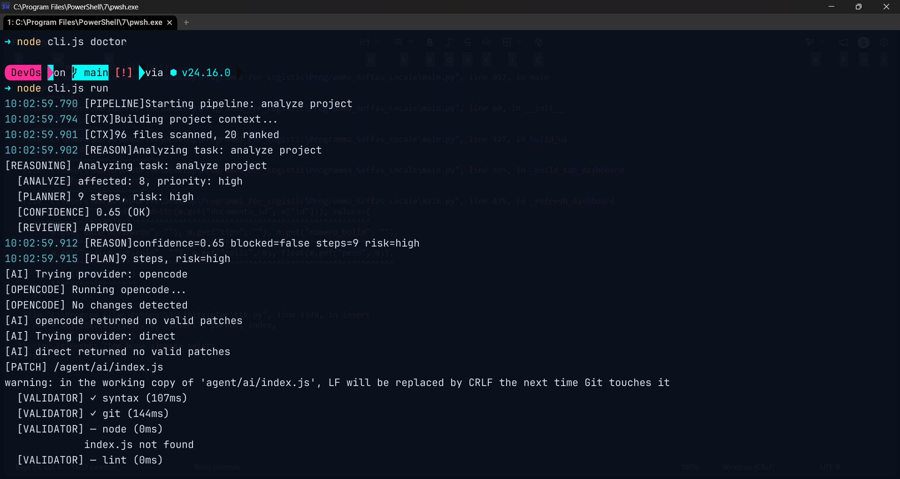

DevOS
Ogni volta che dovevo aggiornare un ambiente di sviluppo, facevo tutto a mano: patch, test, rollback. 30 minuti persi ogni volta. Ho costruito un agente Node.js che orchestra script PowerShell: applica patch, valida i risultati, e se qualcosa fallisce fa rollback automatico. Il setup che prima richiedeva mezz'ora si fa in pochi secondi.
Il setup che prima richiedeva mezz'ora ora si fa in pochi secondi.
Code